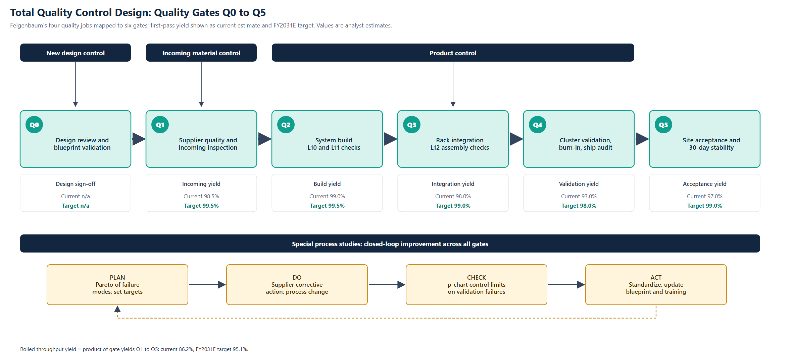
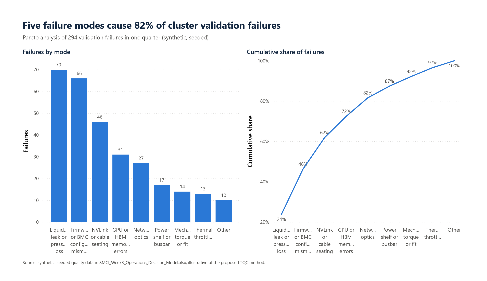
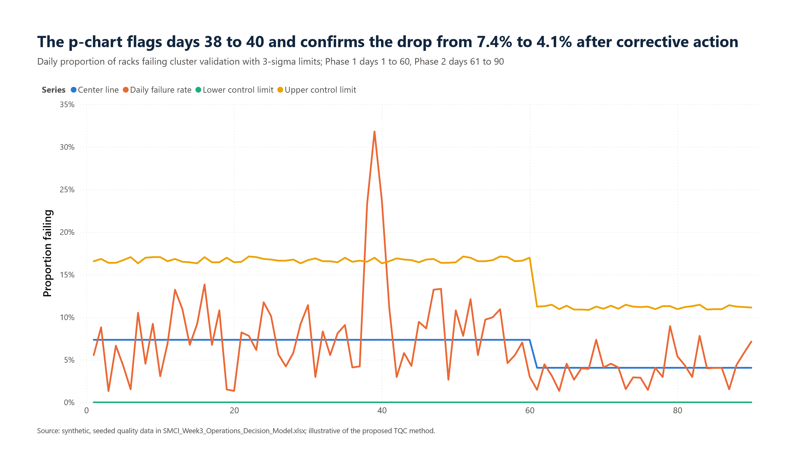
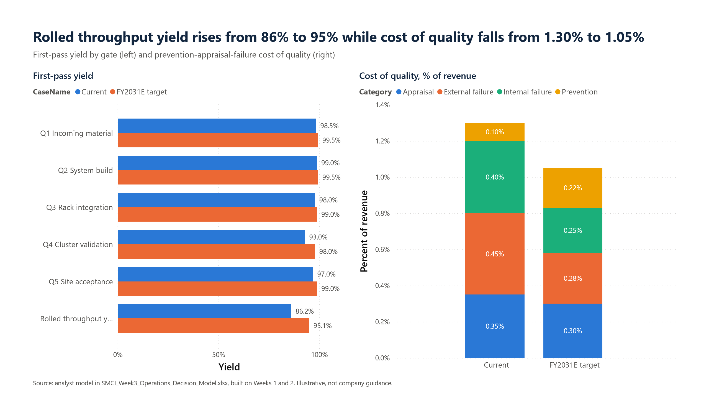
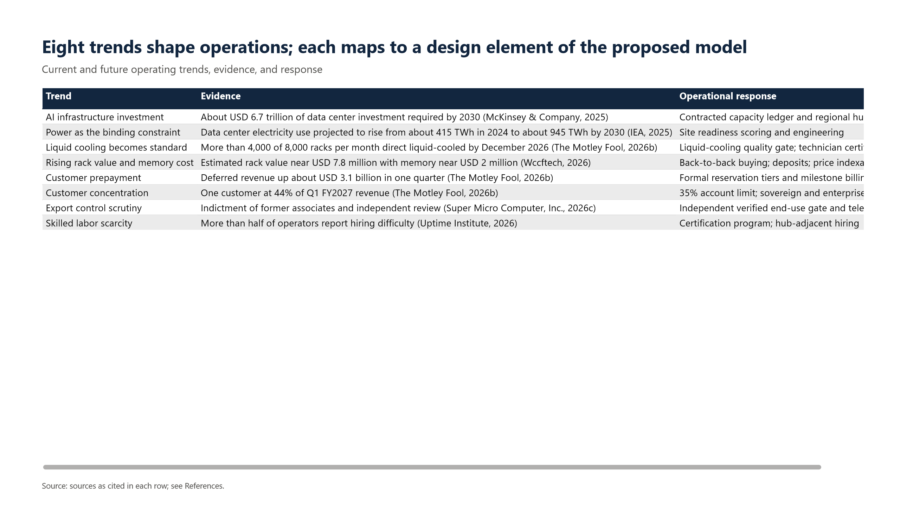
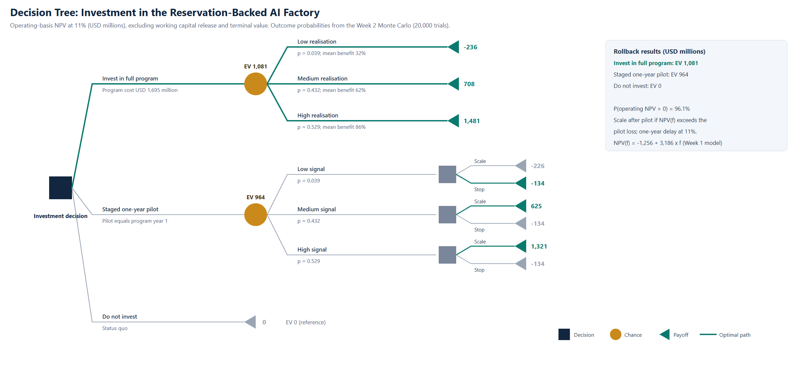
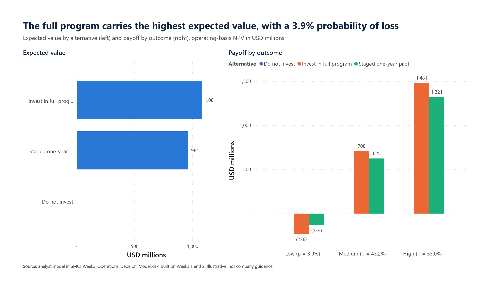
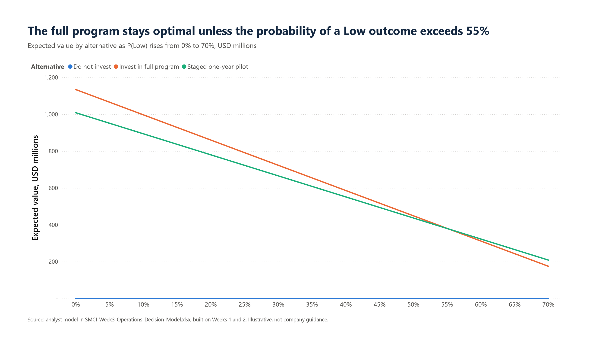
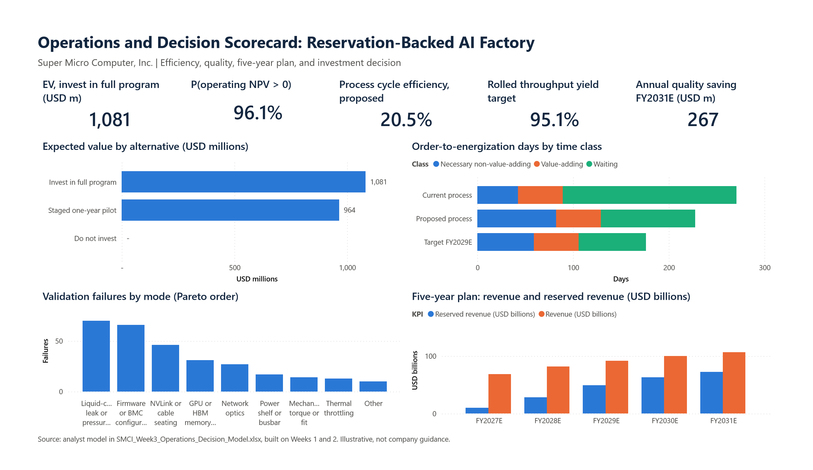

Decision Analysis
How the Plan Sells the Product and Service
The plan sells delivery certainty rather than hardware alone. Each reservation tier converts a deposit into a guaranteed build slot. A validated cluster arrives ready to power on, and the customer gains an estimated USD 0.28 million per megawatt in net value from earlier energization (Week 2). Quality is the proof point behind that promise, and the total quality control design below makes the promise measurable. The four sales motions from Week 2 carry the offer to hyperscale, neocloud, sovereign, and enterprise buyers, and lifecycle service extends each sale into a recurring relationship.
Total Quality Control
Total quality control integrates quality development, maintenance, and improvement across marketing, engineering, production, and service, so that customer satisfaction is reached at the most economical level (Feigenbaum, 1991). The approach extends quality responsibility to every function and every supplier (Ishikawa, 1985), and improvement follows the plan-do-check-act cycle (Deming, 1986).

Technical interpretation. The Total Quality Control framework establishes six quality gates from design review through site acceptance. Preventive controls, supplier inspection, process monitoring, and root-cause analysis govern defect reduction.
Design of the Quality System
- New design control (Q0). Each blueprint passes a design review covering power, cooling, and network specifications, so that defects are prevented before procurement.
- Incoming material control (Q1). Supplier scorecards, lot inspection, and corrective action requests apply to GPUs, memory, cooling components, and related-party chassis.
- Product control (Q2 to Q4). In-process checks at system build (L10 and L11) and rack integration (L12) precede full cluster validation with burn-in under production workloads, followed by a shipment audit and crate seal.
- Site acceptance (Q5). Integration closes with site acceptance testing and 30 days of stability monitoring through telemetry.
- Special process studies. Pareto analysis, statistical process control, and root-cause studies run across all gates and feed corrective action back into blueprints, supplier terms, and training.
The quality data that follows is synthetic and seeded, built to illustrate the method at the 7% validation failure rate used in the Week 2 simulation.

Analysis. Five failure modes account for 82% of failures: liquid-cooling leaks or pressure loss (70), firmware or BMC configuration mismatch (66), NVLink or cable seating (46), GPU or HBM memory errors (31), and network optics (27). Corrective effort therefore targets coolant fittings and quick disconnects at supplier level, automated firmware baselining at Q2, and cable-seating verification at Q3.

Analysis. The p-chart sets control limits at p̄ ± 3√(p̄(1 − p̄)/n), where n is the number of racks tested each day (Montgomery, 2019). In Phase 1 the center line is 7.4%, with an upper limit near 17%. Days 38 to 40 exceed the limit at 23% to 32% and represent an assignable cause, illustrated here as a defective lot of coolant fittings. The three days are excluded from the Phase 1 limits. After corrective action, the Phase 2 center line falls to 4.1%, with no further out-of-control points.

Analysis. Rolled throughput yield, the product of the five gate yields, rises from 86.2% to 95.1% as cluster validation yield improves from 93% to 98%. Cost of quality shifts toward prevention: prevention spending rises from 0.10% to 0.22% of revenue, while internal and external failure costs fall from 0.85% to 0.53%. Total cost of quality falls from 1.30% to 1.05% of revenue, saving approximately USD 267 million per year at FY2031E revenue. The 0.25-point reduction equals the yield and rework margin uplift in the Week 1 model, so the quality program is the operating mechanism behind that assumption.
Current and Future Operating Trends

Technical interpretation. Eight operating trends combine infrastructure investment, power availability, liquid cooling, high-value components, customer prepayments, concentration, export scrutiny, and workforce supply.
- AI infrastructure investment continues to grow. Data center investment of about USD 6.7 trillion is required by 2030 (McKinsey & Company, 2025). Demand supports the capacity ledger and regional hubs.
- Power is becoming the binding constraint. Data center electricity use is projected to rise from about 415 TWh in 2024 to about 945 TWh by 2030 (International Energy Agency [IEA], 2025). Site readiness, not hardware alone, increasingly determines when revenue arrives.
- Liquid cooling is becoming standard. More than half of planned rack output will be direct liquid-cooled (The Motley Fool, 2026b), which makes coolant integrity the leading quality risk in the Pareto analysis.
- Rack value and memory cost are rising. A Vera Rubin rack is estimated near USD 7.8 million, with memory near USD 2 million (Wccftech, 2026). Higher unit value raises the cost of inventory errors and supports back-to-back purchasing.
- Customers are prepaying. Deferred revenue rose by about USD 3.1 billion in one quarter (The Motley Fool, 2026b), which supports formal reservation tiers.
- Concentration remains high. One customer represented 44% of first-quarter FY2027 revenue (The Motley Fool, 2026b), which supports the 35% account limit.
- Export scrutiny is increasing. Charges against former associates and the independent review (Super Micro Computer, Inc., 2026c) support an independent verified end-use gate.
- Skilled labor is scarce. More than half of data center operators report hiring difficulty (Uptime Institute, 2026), which supports the technician certification program.
Decision Tree
The decision follows the expected-value method of decision analysis: alternatives and uncertain outcomes are laid out as a tree, payoffs are assigned to each path, and the tree is rolled back to the alternative with the highest expected value (Raiffa, 1968; Clemen & Reilly, 2014).

Technical interpretation. Decision-tree branches compare immediate full investment, a one-year pilot with a scale-or-stop option, and no investment. Modeled Low, Medium, and High realization outcomes determine the operating-basis NPV.
Structure and Inputs
- Decision. Supermicro can invest in the full USD 1.695 billion program, run a one-year pilot equal to program year one and then decide whether to scale, or decline to invest.
- Uncertainty. Benefit realization falls into three outcomes, drawn from 20,000 Week 2 Monte Carlo trials: Low (below the 39.4% break-even), with probability 3.9% and mean realization 32%; Medium (39.4% to 75%), with probability 43.2% and mean 62%; and High (75% or more), with probability 53.0% and mean 86%.
- Payoffs. Operating-basis NPV at 11% follows the Week 1 relationship NPV(f) = −1,256 + 3,186 × f, in USD millions. A pilot stopped after one year loses USD 134 million. A pilot that scales delays the full program by one year.
| Outcome | Probability | Invest in full program | Staged pilot (best action) | Do not invest |
|---|---|---|---|---|
| Low | 3.9% | −236 | −134 (stop) | 0 |
| Medium | 43.2% | 708 | 625 (scale) | 0 |
| High | 53.0% | 1,481 | 1,321 (scale) | 0 |
| Expected value | 1,081 | 964 | 0 |

Analysis. The full program yields the highest expected value, USD 1,081 million, with a 3.9% probability of loss and a worst case of −USD 236 million. The staged pilot has the same probability of loss and a better worst case of −USD 134 million, but an expected value USD 117 million lower. The pilot's information is worth only USD 3.9 million, the loss avoided in the Low outcome, while the one-year delay costs USD 121 million in expected value. Waiting is therefore more expensive than the risk avoided.

Analysis. The full program remains optimal until the probability of a Low outcome exceeds 55.2%, more than fourteen times the estimated 3.9%. Declining to invest becomes preferable only above 82.8%. The decision is therefore robust to large errors in the sales assumptions. On the broader Week 1 basis, which includes working capital release from deposits and lower inventory, the program NPV reaches USD 18.9 billion.

Technical interpretation. The executive dashboard integrates operating efficiency, Five-Year Plan targets, quality performance, and investment decision results into a management-level summary.
Recommendations to Management
- Approve the full USD 1.695 billion program in place of a staged pilot. Expected value is USD 1,081 million on the conservative operating basis, the probability of a positive NPV is 96.1%, and delay costs more than the information a pilot provides.
- Govern through quarterly stage gates rather than a delayed start. Release each tranche of funding against reservation share, cycle time, and first-pass yield targets from the Five-Year Plan, with stop criteria if realization tracks toward the Low outcome.
- Formalize the reservation tiers and deposits. Reserved and Strategic Capacity tiers at a 20% deposit convert the prepayment trend into contracted demand and shorten the cash conversion cycle toward 73 days (Weeks 1 and 2).
- Separate end-use verification from sales. An independent compliance gate with telemetry attestation addresses the most severe risk identified in Week 1 and protects the license position in foreign markets.
- Gate every build on site readiness. Scoring sites before committing supply removes finished-goods holds and saves 38 days of mean cycle time (Week 2).
- Implement the total quality control program. Concentrate on the five vital-few failure modes, run p-charts at cluster validation, and shift spending to prevention, targeting 95% rolled throughput yield and a USD 267 million annual cost-of-quality saving.
- Move suppliers to vendor-managed kits and qualify second sources. Raise process cycle efficiency from 21% to 27% and reduce dependence on the supplier holding 63.1% of purchases.
- Build lifecycle services into every agreement. Grow service revenue to USD 3.6 billion as the recurring layer that steadies margins.
- Cap any single account at 35% of reserved revenue and grow the sovereign and enterprise motions to diversify the customer base.
- Protect foreign pricing. Hold a 3% foreign premium, use local-currency price bands with hedging, and secure licenses early, because a 10% stronger dollar would cut foreign revenue by 40% (Week 2).
- Secure the workforce early. Launch the technician certification program and hub-adjacent hiring ahead of FY2028E volume.
Why Management Should Accept the Plan
Each analysis points to the same conclusion. Week 1 showed that the current process commits capital before demand, end use, and site readiness are verified, and that the redesign pays back by FY2029E on operating cash flow alone. Week 2 showed through simulation that the redesign delivers capacity 38 days sooner with 61% less funded capital, that the sales plan has a 66% probability of full success, and that customers gain value from the reservation terms. Week 3 shows that the operating and quality systems can deliver the promised certainty and that the investment decision holds even if the probability of failure is fourteen times higher than estimated. Supermicro's own recent move toward deposits and milestone billing (The Motley Fool, 2026b) indicates that the market is ready for the model. Formalizing the model turns an informal trend into a durable competitive advantage.